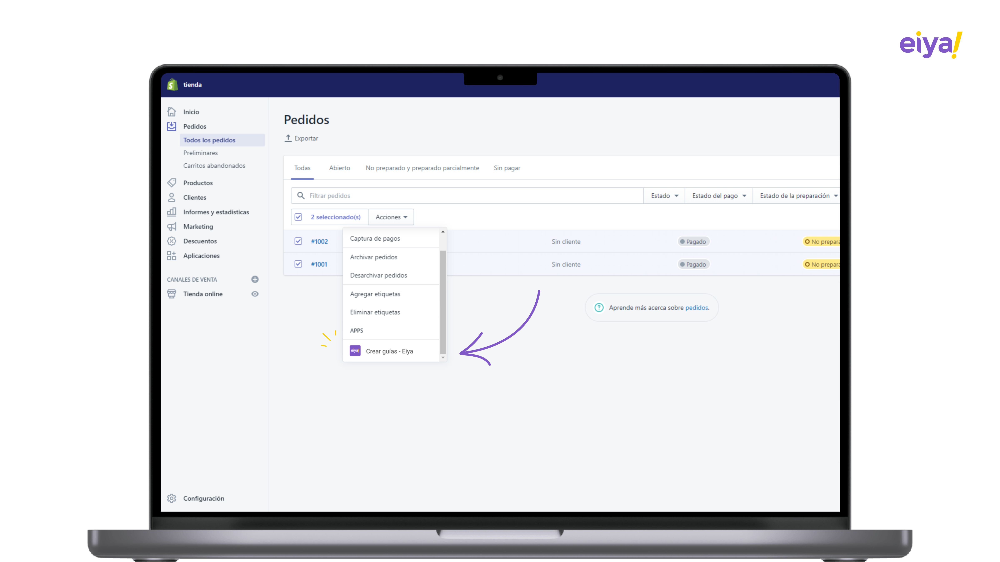
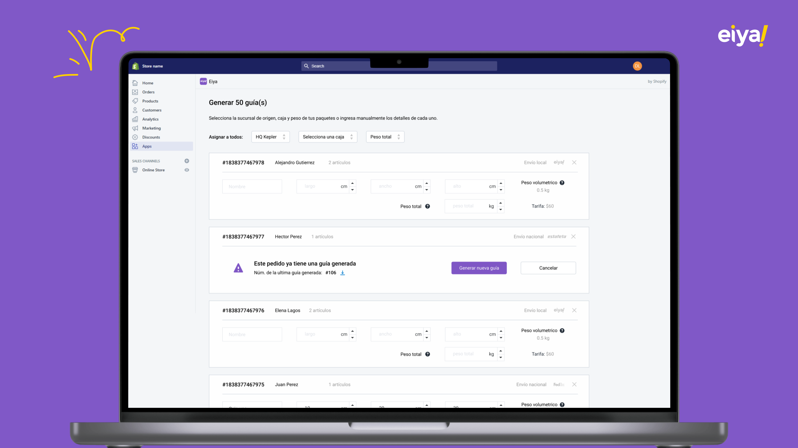
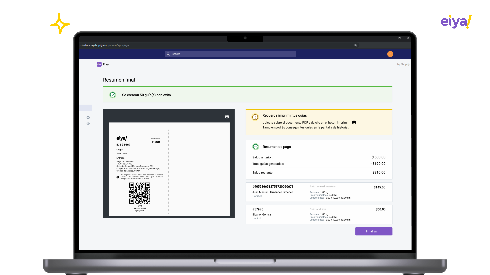
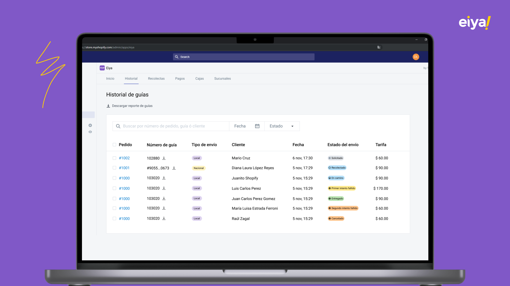

Shopify es, sin duda, una de las plataformas de comercio electrónico más utilizadas y la opción preferida para los clientes de nuestra empresa de envíos. Reconociendo esta tendencia, nos propusimos crear una experiencia única e integrada que permita a los usuarios solicitar envíos sin necesidad de salir de Shopify. Nuestra meta es ofrecer una solución que no solo simplifique el proceso de envío, sino que también mejore significativamente la comodidad y la eficiencia para nuestros clientes, optimizando así sus operaciones diarias.
Metodologia empleada: Design Thinking
Las principales preguntas que planteamos a nuestros usuarios son las siguientes: ¿Qué problemas encontraban con los métodos de envío actuales en Shopify? y ¿Cuál era su mayor frustración al solicitar sus envíos?
Queríamos comprender a fondo las dificultades que experimentaban con las soluciones de envío existentes y qué aspectos específicos les resultaban más problemáticos. Además, buscábamos identificar las áreas donde sentían mayor frustración, ya fuera en términos de la interfaz de usuario, la eficiencia del proceso, la disponibilidad de opciones de envío, o cualquier otro factor que afectara negativamente su experiencia. Con esta información, nuestro objetivo era desarrollar mejoras significativas que abordaran directamente sus inquietudes y proporcionaran una solución más eficaz y satisfactoria.
Basado en la información recolectada en la etapa de empatía, definimos el siguiente problema principal que ayudo a ofrecer otro servicio en la empresa.
La ineficiencia en el proceso de gestión de envíos en Shopify. Este problema se manifiesta en varios aspectos críticos que afectan negativamente la experiencia del usuario y la productividad operativa. Primero, solicitar guías para cada pedido es un proceso lento y frustrante, lo que retrasa considerablemente el cumplimiento de los envíos y crea una carga de trabajo innecesaria. Además, llenar la información de cada paquete, incluyendo medidas y peso, resulta ser una tarea tediosa y repetitiva que consume un tiempo valioso que podría ser utilizado en otras actividades importantes. Por último, tener que cambiar entre diferentes plataformas para solicitar envíos según los precios añade una capa adicional de complejidad y disminuye la eficiencia operativa, ya que los usuarios deben invertir tiempo y esfuerzo en comparar tarifas y gestionar múltiples sistemas. En conjunto, estas dificultades crean una experiencia de usuario insatisfactoria y dificultan una gestión de envíos fluida y eficiente, afectando tanto a los negocios como a sus clientes.
Realizamos un exhaustivo proceso de generación y validación de ideas para evaluar su viabilidad técnica. Este proceso incluyó análisis detallados, consultas con expertos y pruebas preliminares para asegurarnos de que las características propuestas fueran factibles y se alinearan con nuestras capacidades tecnológicas. A partir de esta evaluación, definimos una serie de funcionalidades clave para el plugin en Shopify. Estas características no solo abordan las necesidades actuales de nuestros usuarios, sino que también anticipan posibles mejoras futuras.
Las siguientes funcionalidades fueron definidas para el plugin:
Utilizamos Figma para diseñar las principales pantallas de la aplicación y entregar al equipo de desarrollo.
Crear guias
Formulario para generar hasta 50 guias
Resumen de guias
Historial de guias
Realizamos pruebas de usabilidad con 5 clientes principales, a continuación los resultados:
La implementación de este plugin ha resultado en una experiencia de usuario más fluida y eficiente en Shopify. Al abordar los problemas de ineficiencia en la gestión de envíos, hemos logrado mejorar significativamente la comodidad y la productividad de nuestros usuarios. Esto no solo les permite concentrarse en otras áreas cruciales de su negocio, sino que también contribuye al crecimiento y éxito de sus operaciones comerciales.
Cuautitlán izcalli,
Estado de México
dlopezr1313@gmail.com
Celular: (55) 8055 7367